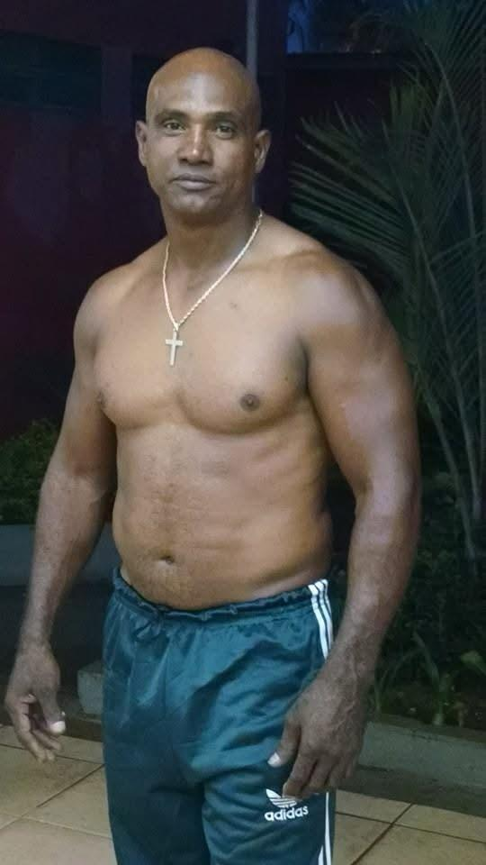

Graduação:
Mestre
Mestre Fumaça
Mestre do Movimento Navio Negreiro
Mestre Fumaça é o iniciador do Projeto Social Navio Negreiro e dedica sua vida à preservação e difusão da cultura da capoeira. Com mais de 32 anos de experiência, ele começou sua jornada ainda criança e se tornou uma referência na área.
Ele combina conhecimento técnico com profunda sabedoria cultural. Sua paixão pela capoeira vai além dos movimentos - ele é um verdadeiro guardião das tradições ancestrais.
Sob sua liderança, o projeto já possui muitos capoeiristas e impactou positivamente vidas em nossa comunidade.
Principais Conquistas:
- 32+ anos de experiência em capoeira
- Mestre do Projeto Navio Negreiro
- Especialista em Cultura Afro-Brasileira
- Reconhecimento municipal pelos serviços prestados